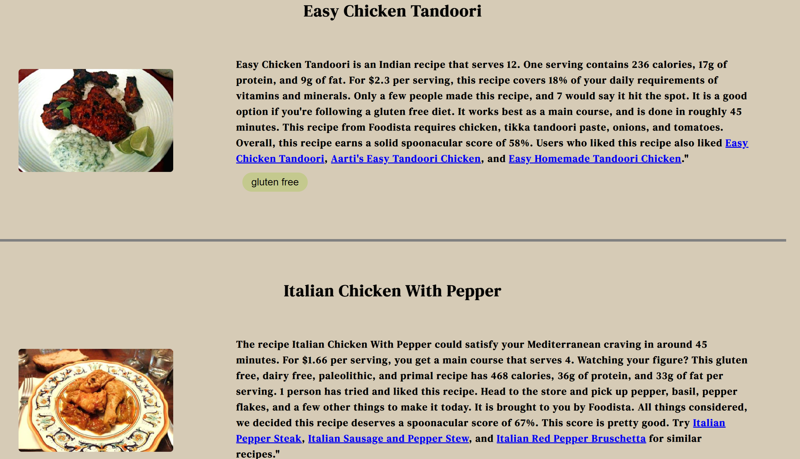
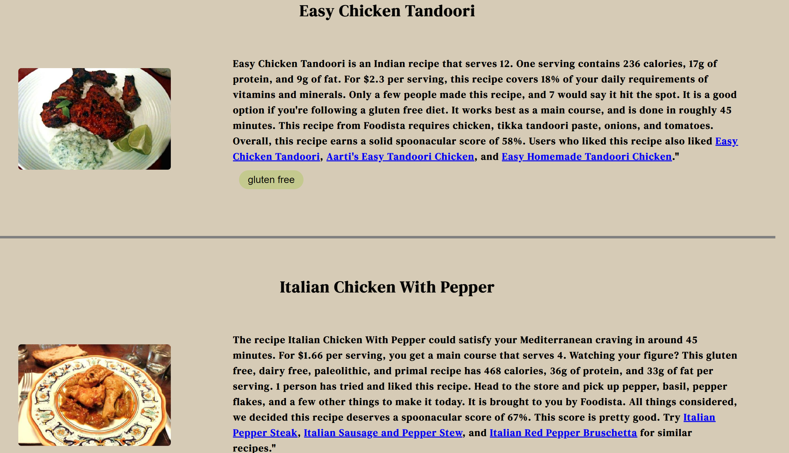

Selected Projects
Personal Portfolio (this website)
- Building a personal portfolio to showcase achievements, skills, aspirations, collection of projects, and interests
- Designed and adapted with responsiveness using media queries, to ensure and improve accessibility and usability for mobile devices
- Marked up with HTML and refined design choices with CSS; aggregated user functionality and interactive design with JavaScript
- Skills: HTML, CSS, and JavaScript
Recipeasy
Problem/Context: During Hack at UCI's 2023 hackathon, I collaborated with three other students to design a website with a goal and mission of reducing food waste and facilitate users to eat healthier and more economically friendly.
All of us resonated with this idea as we are all on a budget, being college students, and we want to use every single ingredient to its highest potential. Additionally, our goal was to create a minimum viable product,
MVP, by sketching out the functional and non-functional requirements.
Collborators: Seongjin Yoon, Piyashi Biswas, and Chessah Fox.

- Seongjin Yoon
- Seongjin is a third year computer science major; he has an expertise in backend development.
- Piyashi Biswas
- Piyashi is a 1st year Phd Student in Biomedical Engineering and worked on the backend.
- Chessah Fox
- Chessah is a 5th year computer science and engineering major. With Piyashi, she worked on the backend side of Recipeasy. This is her second hackahon.
Duration: 36 hours.
Process:
- As this event was a hackathon, we mostly used rapid prototyping to make it easier to iteraively test our website and get the proper outputs. For the first day, we mainly discussed what tech stack we were gonna use to build our website - for the frontend, we chose to use HTML to mark up the website and CSS to define the design of the website. For the backend, we chose to use Node.js since we would be using the same type of language with the front and end. Since this was a hackathon, we didn't have much documentation and more vocally communicated with each other.
- During the second day of "hacking" we elected to split the group into two subteams - frontend and backend. By deligating different roles of each team, we were able to more efficiently develop our product.
- The primary on the last day of the event was submitting our project.
Role: I was one of the two - Seongjin and I - frontend developers of this project. Using HTML, CSS, and JavaSCript we designed the website.
Tools Used: Visual Studio Code, HTML/CSS/JS, Insomnia, Node.js, Express, Vercel
What we learned/Reflection: This was all our first hackathon, except for Chessah, it being her second. We learned that full stack development requires constant communication. Additionally, we learned that it wasn't feasible to work with Github and contsantly pushing/forking/pulling due to the time constraint. Instead we switced midway and made the adjustments to pair program. We would also like to make Recipeasy produce recipes faster. More importantly, we learned to have fun.
 
